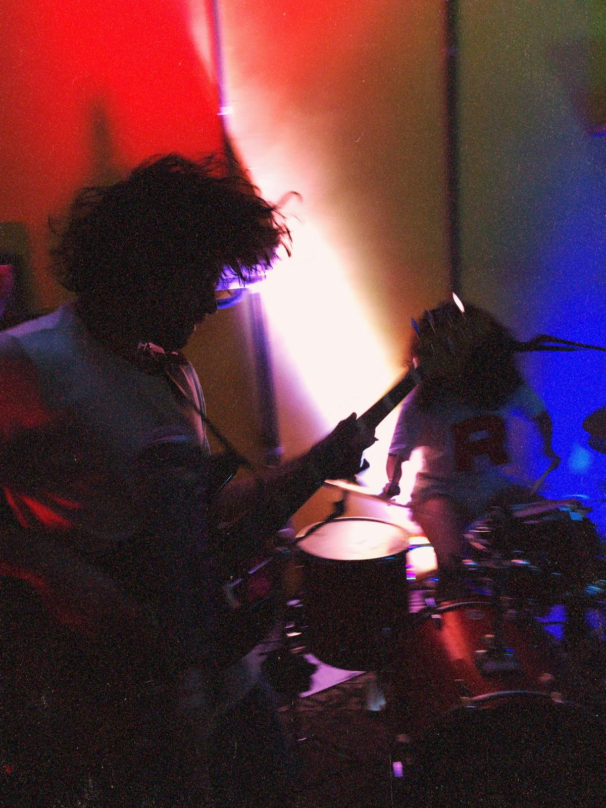
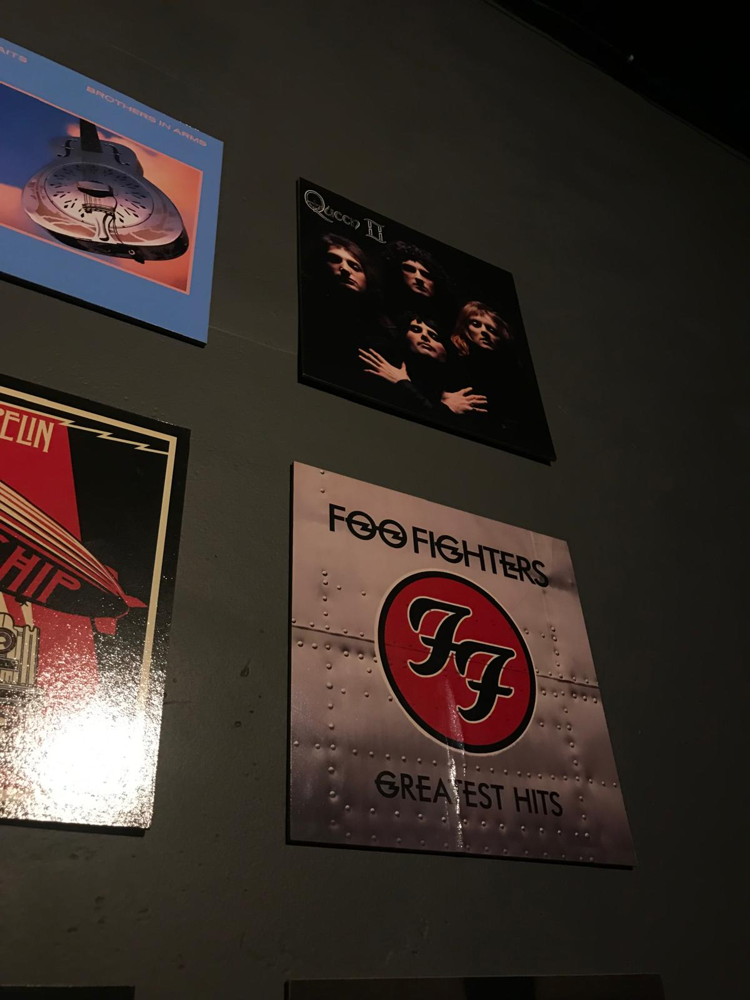
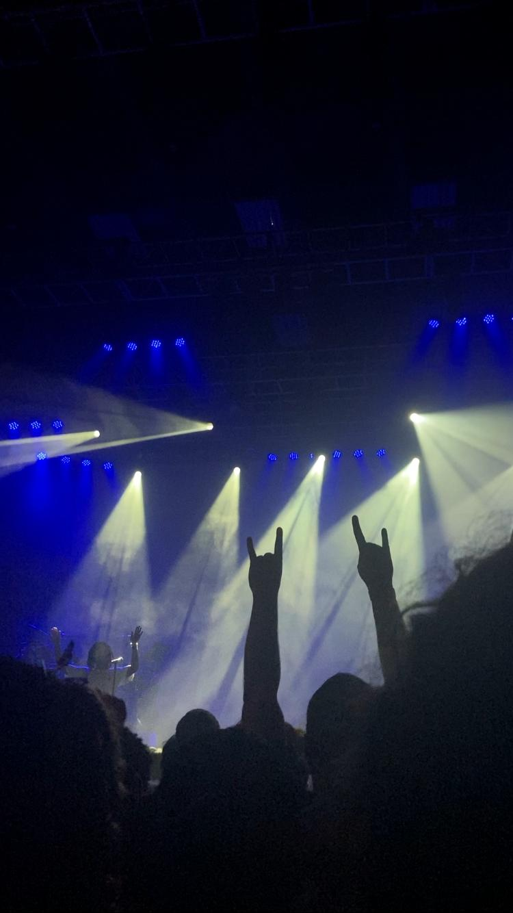

Hey, this is Yanna writing.
My favorite thing in the whole world is MUSIC.
So that was my first thought when I knew I had to create a page about something.
Ok... But why do you like music so much?
Well, I feel like the songs I listen to helps me to process emotions better.
It doesn't really matter if it's a sad or a happy moment, listening to the right song always makes me feel calmer and puts my thoughts in the right place.
So here I've selected my three favorite bands and some songs that are very special for me.
My top 3
- Paramore

Paramore's been a band that I've been listening to since I don't know when, their lyrics remind me of my teenager years and also a bunch of new feelings as an adult.
Some of my favorite songs are: When It Rains, Playing God, Last Hope, Idle Worship and Thick Skull
- Foo Fighters

Foo Fighters is a band I started listening as a teenager and the album The Colour and The Shape specifically is really meaningful to me.
- House of Protection

House of Protection is a band I started listening when I got here in the US, I've been listening to them nonstop and I went to see them live in Maryland.